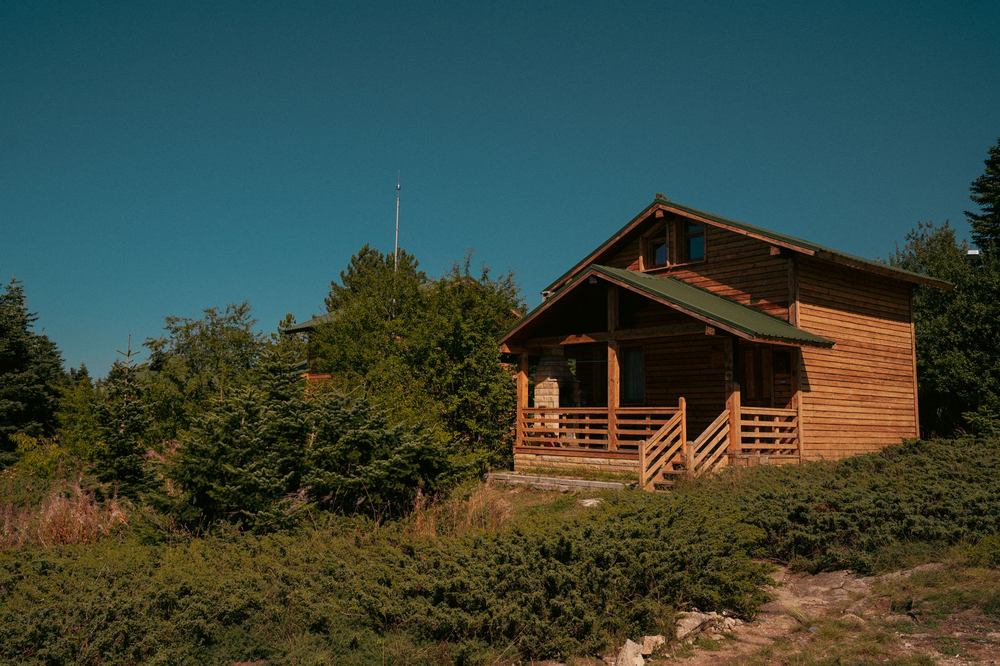

Complejo E.Dén
Naturaleza en familia
Cuatro cabañas en un mismo predio abierto, con espacio para que los chicos anden sueltos y los grandes no se muevan de la reposera. Parrilla en cada una y una explanada de pasto que termina en la sierra.
- Ideal para grupos de dos o tres familias
- Parrilla propia y fogón compartido
- Pasto, sombra y estacionamiento junto a la puerta